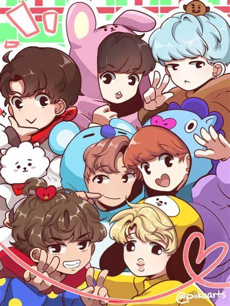

Si aún no conoces a BTS es porque no vives en el mundo… BTS es un grupo de K-pop formado por 7 integrantes: RM, Jimin, Junkook, Suga, Jin, V y J-Hope.
Hace 9 años que están en activo en el mundo regalándonos 10 álbumes de absoluta magia desde entonces. Son cantantes, bailarines, actores e incluso modelos, unos chicos súper versátiles que dan todo en cada actuación, concierto o videoclip. Una vez que los comienzas a escuchar te atrapan.
Provienen de la gran discográfica Big Hit Entertaiment, con los que los miembros del grupo coescriben y coproducen la mayor parte de su material discográfico. Han conseguido llegar más lejos que cualquier otro grupo coreano en el mundo y han hecho que más grupos de K-Pop sean conocidos, además de expandir la cultura coreana por el mundo.
Por si no los sabías, a los seguidores del grupo se les conoce como ARMYS, no como fans, y el color por el que les podrás identificar es el morado, ¿te suena el “We purple you”💜? Este término fue acuñado por el integrante del grupo Kim Taehyung (V), el cual en el aniversario del grupo en 2016 les dijo a sus ARMYS que “El morado es el último color del arco iris y significa que confiaré en ti y te amaré por mucho tiempo”. Adorable, ¿verdad?.
Y bien, ahora que nos hemos puesto en contexto querrás saber quiénes son estos muñequitos tan adorables que conforman BT21, ¿no?
BT21 nace de una colaboración de BTS con Line Friends en 2017. De repente en Twitter apareció una cuenta llamada BT21 en la que aparecieron unos dibujos hechos a mano. Cada personaje pertenecía a un dibujo realizado por cada integrante del grupo, cosa que creó un gran revuelo en ARMY ya que estaban deseando conocer a quien correspondía cada uno. Estos personajes están formados por TATA, Chimmy, Cooky, Shooky, RJ, Koya y Mang. También está VAN, el cual explicaremos más tarde… 😛 La historia comienza cuando TATA, procedente del país BT, y siendo el personaje más curioso del grupo, decide explorar mundo. Decidido viaja tierra en su robot VAN y por error acaban en el planeta tierra. Cuando aterriza, ve un cartel de unos idols (BTS) y decide que él quiere ser igual de famoso que ellos y quiere convertirse en una universtar. Tras esto emprende un viaje para reclutar a diferentes integrantes del grupo de idols que finalmente pasarán a llamarse BT21. ,
RM representa a ‘Koya-Koala’. Se trata de un koala de color azul y que ha causado mucha ternura entre sus fanáticos. Es descrito como: “brillante, talentoso y muy dormilón”.
Suga representa a ‘Shooky’. Este personaje es una galleta muy pequeña color café. El cantante eligió un objeto en lugar de un animal ya que “odia beber leche y no le gusta tener cerca a otra galleta”.
Taehyung representa a ‘Tata’. Se trata de un Alien, que al parecer posee la capacidad de transformarse en cualquier momento. Es calificado como “muy divertido”, ya que tiene la capacidad de hacer diferentes figuras.
Jimin representa a ‘Chimmy’. Es un perro pequeño que siempre lleva un traje de color amarillo. Se definió como un personaje “muy juguetón”.
Jin representa a ‘RJ’. Se trata de una alpaca, que una de sus características principales es que posee un pañuelo rojo atado al cuello, debido a que “a veces hace frío”.
J-Hope representa a ‘Mang’. Se trata de un pony que “ama bailar” y que su debilidad se muestra inmediatamente al escuchar música. No obstante, este personaje esconde su rostro detrás de una máscara.
Jungkook representa a ‘Cooky’. Es un conejo muy rudo, lo que lo hace diferente de los otros personajes. Se dice que su principal pasatiempo, es estar “durante varias horas ejercitándose para lograr cumplir su sueño de ser musculoso”.
VAN: Este personaje es referencia de las ARMYS, como se llama al fandom de BTS y es un “robot del espacio” que siempre será protector de los ‘BT21’.
